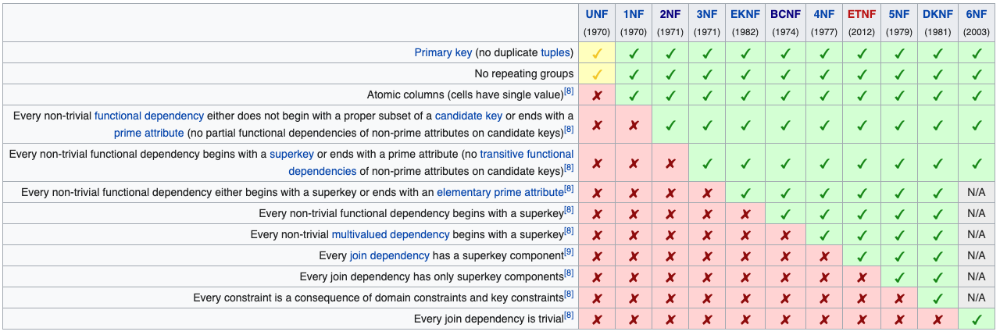

# INFO 610 Fall 2020 <div style="text-align:center;font-size: 1.5;line-height:1.8em;">Week 15</div> <div style="text-align:center;font-size: 1.5;line-height:1.8em;">Nov 24, 2020</div> --- # Agenda 1. DB Normalization --- # Database normalization There are (at least) 6.5 normal forms when we analyze our data. <table width="80%"> <tr><th>Form</th><th>Description</th></tr> <tr><td>First Normal Form</td><td>Deals with functional and multivalued dependencies</td></tr> <tr><td>Second Normal Form</td><td>Deals with functional dependencies, transitive dependencies, and calculated fields</td></tr> <tr><td>Third Normal Form</td><td>Deals with functional dependencies and modification anomalies</td></tr> <tr><td>Boyce/Codd Normal Form</td><td>Primarily used on spatial data</td></tr> <tr><td>Fourth Normal Form</td><td>Deals with multivalued dependencies</td></tr> <tr><td>Fifth Normal Form</td><td>Deals with join dependencies</td></tr> <tr><td>Sixth Normal Form</td><td>Deals with determinates and candidate keys</td></tr> <tr><td>Domain/Key Normal Form</td><td>Deals with domains and keys</td></tr> </table> ## Why do we 'normalize' tables? Increase performance Increase Data Redundancy Data Integrity --- # Working Example Let's start with a spreadsheet to keep track of movie rentals. <table width="80%"> <tr><th>Full Name</th><th>Physical Address</th><th>Movies Rented</th><th>Salutation</th></tr> <tr><td>Chris Fauerbach</td><td>123 Main Street<br/>Richmond, VA<br/>23120</td><td>The Matrix, Pirates of the Caribbean, Nightmare Before Christmas</td><td>Mr.</td></tr> <tr><td>Mike Schmidt</td><td>7 Inning Stretch Lane<br/>Philadelpia, PA<br/>18238</td><td>Field of Dreams, Moneyball, A League of their Own</td><td>Mr.</td></tr> <tr><td>William Gates</td><td>1 My Road Street<br/>Gatesville, WA<br/>000001</td><td>Pirates of Silicone Valley, Hackers, How to Succeed in Business</td><td>Sir</td></tr> <tr><td>Trevor Noah</td><td>342 Streaming Show Rd<br/>Downtown, USA<br/>34234</td><td>Goonies, Naked Gun, Spaceballs</td><td>Mr.</td></tr> </table> This data is not in any 'normal' form. We can call it un-normalized, 0th normal form, bad.. whatever adjective you want to use. --- # First Normal Form Each table cell should contain a single value. Each Record needs to be unique <table width="80%"> <tr><th>Full Name</th><th>Physical Address</th><th>Movies Rented</th><th>Salutation</th></tr> <tr><td>Chris Fauerbach</td><td>123 Main Street<br/>Richmond, VA<br/>23120</td><td>The Matrix</td><td>Mr.</td></tr> <tr><td>Chris Fauerbach</td><td>123 Main Street<br/>Richmond, VA<br/>23120</td><td>Pirates of the Caribbean</td><td>Mr.</td></tr> <tr><td>Chris Fauerbach</td><td>123 Main Street<br/>Richmond, VA<br/>23120</td><td>Nightmare Before Christmas</td><td>Mr.</td></tr> <tr><td>Mike Schmidt</td><td>7 Inning Stretch Lane<br/>Philadelpia, PA<br/>18238</td><td>Field of Dreams</td><td>Mr.</td></tr> <tr><td>Mike Schmidt</td><td>7 Inning Stretch Lane<br/>Philadelpia, PA<br/>18238</td><td>Moneyball</td><td>Mr.</td></tr> <tr><td>Mike Schmidt</td><td>7 Inning Stretch Lane<br/>Philadelpia, PA<br/>18238</td><td>A League of their Own</td><td>Mr.</td></tr> <tr><td>William Gates</td><td>1 My Road Street<br/>Gatesville, WA<br/>000001</td><td>Pirates of Silicone Valley</td><td>Sir</td></tr> <tr><td>William Gates</td><td>1 My Road Street<br/>Gatesville, WA<br/>000001</td><td>Hackers</td><td>Sir</td></tr> <tr><td>William Gates</td><td>1 My Road Street<br/>Gatesville, WA<br/>000001</td><td>How to Succeed in Business</td><td>Sir</td></tr> <tr><td>Trevor Noah</td><td>342 Streaming Show Rd<br/>Downtown, USA<br/>34234</td><td>Goonies</td><td>Mr.</td></tr> <tr><td>Trevor Noah</td><td>342 Streaming Show Rd<br/>Downtown, USA<br/>34234</td><td>Naked Gun</td><td>Mr.</td></tr> <tr><td>Trevor Noah</td><td>342 Streaming Show Rd<br/>Downtown, USA<br/>34234</td><td>Spaceballs</td><td>Mr.</td></tr> </table> --- # Second Normal Form * The table is in 1st normal form, and * All the non-key columns are dependent on the table’s primary key. Movie and Address are a violation of 2NF since they aren't a 'primary' attribute that depends on the candidate key (customer ID) In Context, this starts pushing us to bring each 'table' to be focused on a single entity. In this example, we would end up with three tables. * Customer * Address * Movie <table width="70%"> <tr><th>customer ID</th><th>Name</th><th>Salutation</th></tr> <tr><td>1</td><td>Chris Fauerbach</td><td>Mr.</td></tr> <tr><td>2</td><td>Mike Schmidt</td><td>Mr.</td></tr> <tr><td>3</td><td>William Gates</td><td>Sir</td></tr> <tr><td>4</td><td>Trevor Noah</td><td>Mr.</td></tr> </table> First and Last name aren't enough to make a primary key / unique identifier. In this case and is normal practice, we can create an 'arbitrary' primary key (Customer ID) --- # Third Normal Form * Must be in 2nd Normal Form * Has no transitive dependencies In our previous example, the salutation field is a duplicated value and is somewhat dependant on the name / gender of the existing row. To put this data into 3nf, we've move salutation into a reference table <table width="70%"> <tr><th>customer ID</th><th>Name</th><th>Salutation ID</th></tr> <tr><td>1</td><td>Chris Fauerbach</td><td>1</td></tr> <tr><td>2</td><td>Mike Schmidt</td><td>1</td></tr> <tr><td>3</td><td>William Gates</td><td>2</td></tr> <tr><td>4</td><td>Trevor Noah</td><td>1</td></tr> </table> <table width="70%"> <tr><th>Salutation ID</th><th>Description</th></tr> <tr><td>1</td><td>Mr.</td></tr> <tr><td>2</td><td>Sir</td></tr> </table> --- # Other normal forms Boyce-Codd normal form * Every non-trivial functional dependency is a dependency on a superkey Elementary Key NF * Every non-trivial functional dependency is either the dependency of an elementary key attribute or a dependency on a superkey 4NF * Every non-trivial multi-valued dependency is a dependency on a superkey 5NF * Every non-trivial join dependency is implied by the superkeys Domain-Key NF * Every constraint on the table is a logical consequence of the domain and key constraints 6NF * No non-trivial join dependencies at all (w.r.t generalized join) These are highly theoretical and based in math problems <a href="https://www.isical.ac.in/~malaybhattacharyya/Courses/DBMS/Spring2020/Class%20V.pdf">https://www.isical.ac.in/~malaybhattacharyya/Courses/DBMS/Spring2020/Class%20V.pdf</a> ---  ---